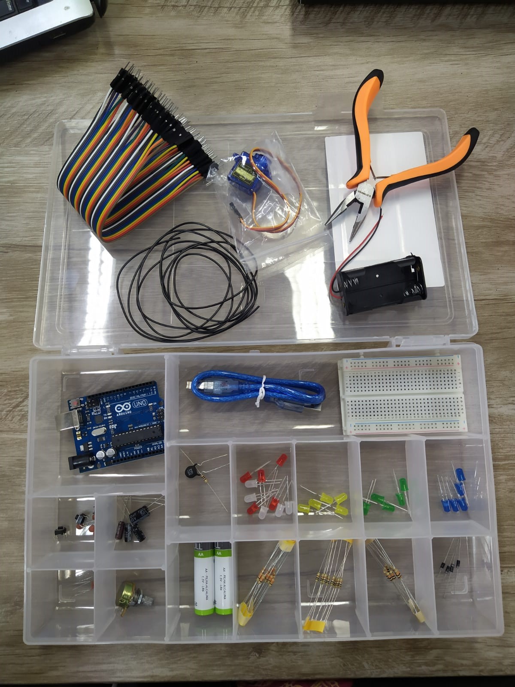
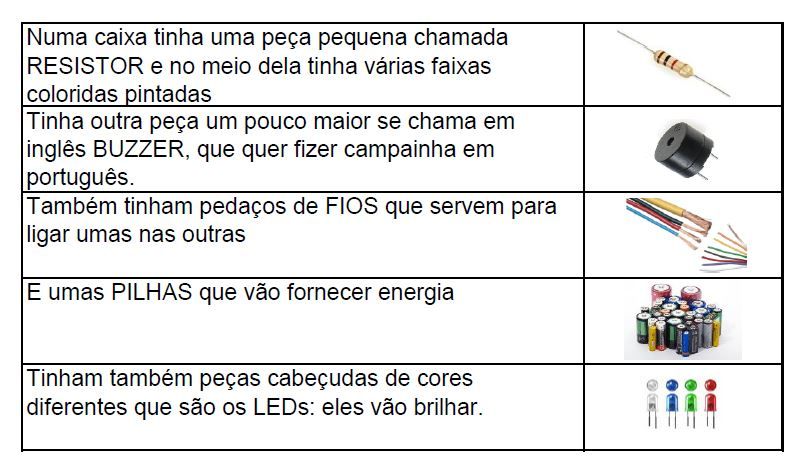
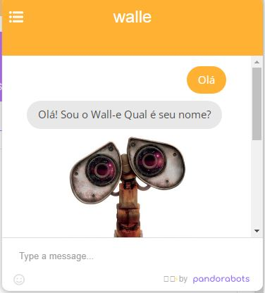
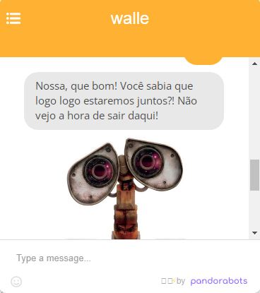
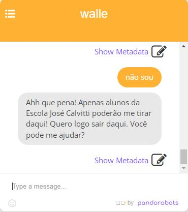
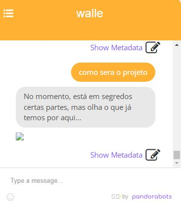
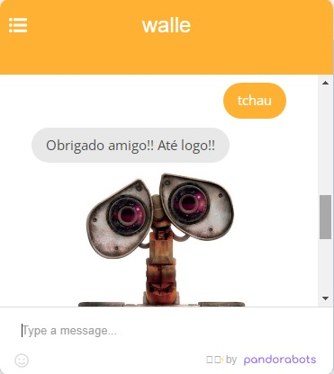
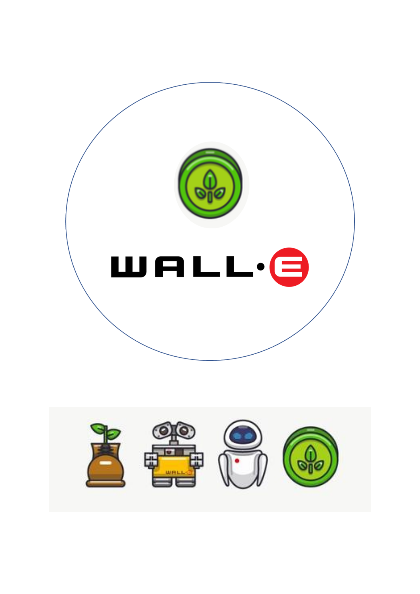
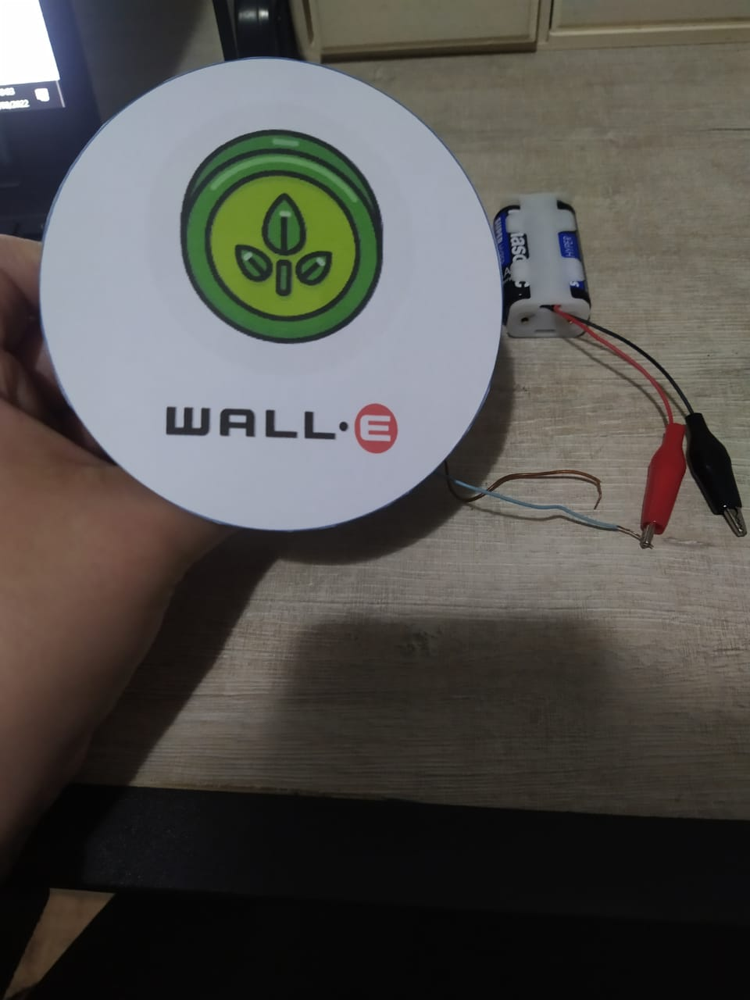

Eu professora Larissa estou no Calvitti, desde 2014, sou Professora de Artes, porém nos últimos anos, com a inserção de novos componentes curriculares e com o novo Ensino Médio, estou atuando em aulas diferenciadas como Eletivas, Projeto de Vida e Tecnologia.
Eu professora Elina entrei no Calvitti, ano passado, em 2021, sou Professora de Tecnologia, O.E e PV.
Veja nossos componentes

Nele há Resistores, Leds, um botão chamado BUZZER, pilhas e mais um monta de componentes!

Olha como anda nosso Projeto, outro dia tivemos um papo com o próprio Wall-e através do ChatBot. Conseguimos esse diálogo a partir da linguagem "aiml", que é uma linguagem de Inteligência Artificial
    
Outro dia criamos um avatar para nosso Projeto Wall-e, buscamos alguns símbolos presentes na animação, lembram desse símbolo? Ele tem muito a ver com nossa ideia de RESISTÊNCIA, não?!?

A partir dele, testamos nosso avatar em um Motor CC (Motor de corrente contínua), fizemos uma ligação com pilhas, para que tivesse uma fonte de energia, e assim o motor pudesse fazer a rotação contínua. Veja como ficou:

Temos um vídeo dele funcionando..